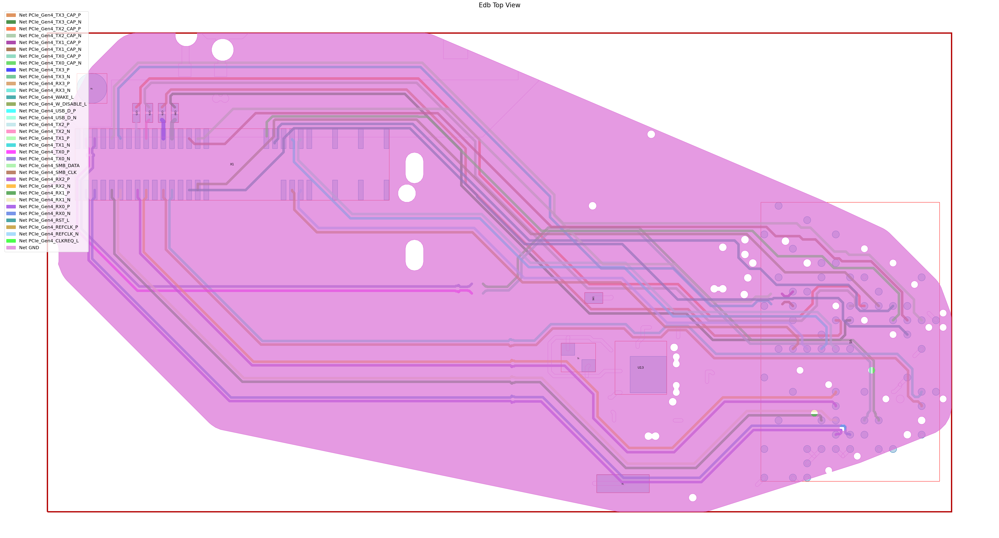

EDB: IPC2581 export#
This example shows how you can use PyAEDT to export an IPC2581 file.
Perform required imports, which includes importing a section.
[1]:
import os
import tempfile
import pyedb
from pyedb.generic.general_methods import generate_unique_name
from pyedb.misc.downloads import download_file
Download the AEDB file and copy it in the temporary folder.#
[2]:
temp_dir = tempfile.TemporaryDirectory(suffix=".ansys")
targetfile = download_file("edb/ANSYS-HSD_V1.aedb", destination=temp_dir.name)
ipc2581_file_name = os.path.join(temp_dir.name, "Ansys_Hsd.xml")
print(targetfile)
C:\Users\ansys\AppData\Local\Temp\tmpf_vntro5.ansys\edb/ANSYS-HSD_V1.aedb
Launch EDB#
Launch the pyedb.Edb class, using EDB 2023. > Note that length dimensions passed to EDB are in SI units.
[3]:
# Select EDB version (change it manually if needed, e.g. "2024.2")
edb_version = "2024.2"
print(f"EDB version: {edb_version}")
edb = pyedb.Edb(edbpath=targetfile, edbversion=edb_version)
EDB version: 2024.2
PyEDB INFO: StdOut is enabled
PyEDB INFO: Logger is initialized in EDB.
PyEDB INFO: legacy v0.36.0
PyEDB INFO: Python version 3.10.11 (tags/v3.10.11:7d4cc5a, Apr 5 2023, 00:38:17) [MSC v.1929 64 bit (AMD64)]
PyEDB INFO: Database ANSYS-HSD_V1.aedb Opened in 2024.2
PyEDB INFO: Cell main Opened
PyEDB INFO: Builder was initialized.
PyEDB INFO: EDB initialized.
Parametrize the width of a trace.#
[4]:
edb.modeler.parametrize_trace_width("A0_N", parameter_name=generate_unique_name("Par"), variable_value="0.4321mm")
[4]:
True
Create a cutout and plot it.#
[5]:
signal_list = []
for net in edb.nets.netlist:
if "PCIe" in net:
signal_list.append(net)
power_list = ["GND"]
edb.cutout(
signal_list=signal_list,
reference_list=power_list,
extent_type="ConvexHull",
expansion_size=0.002,
use_round_corner=False,
number_of_threads=4,
remove_single_pin_components=True,
use_pyaedt_extent_computing=True,
extent_defeature=0,
)
edb.nets.plot(None, None, color_by_net=True)
PyEDB INFO: Cutout Multithread started.
PyEDB INFO: Net clean up Elapsed time: 0m 1sec
PyEDB INFO: Extent Creation Elapsed time: 0m 0sec
PyEDB INFO: 1822 Padstack Instances deleted. Elapsed time: 0m 1sec
PyEDB INFO: 425 Primitives deleted. Elapsed time: 0m 2sec
PyEDB INFO: 928 components deleted
PyEDB INFO: Deleted 464 components
PyEDB INFO: Single Pins components deleted Elapsed time: 0m 0sec
PyEDB INFO: Cutout completed. Elapsed time: 0m 5sec
PyEDB INFO: Plot Generation time 1.141
[5]:
(<Figure size 6000x3000 with 1 Axes>, <Axes: title={'center': 'Edb Top View'}>)

Export the EDB to an IPC2581 file.#
[6]:
edb.export_to_ipc2581(ipc2581_file_name, "inch")
print("IPC2581 File has been saved to {}".format(ipc2581_file_name))
PyEDB INFO: Export IPC 2581 is starting. This operation can take a while.
PyEDB INFO: Parsing Layers...
PyEDB INFO: Parsing BOM...
PyEDB INFO: Parsing Padstack Definitions...
PyEDB INFO: Parsing Components...
PyEDB INFO: Parsing Logical Nets...
PyEDB INFO: Parsing Layout Primitives...
PyEDB INFO: Parsing Drills...
PyEDB INFO: Parsing EDB Completed!
PyEDB INFO: Export IPC 2581 completed. Elapsed time: 0m 2sec
PyEDB INFO: File saved as C:\Users\ansys\AppData\Local\Temp\tmpf_vntro5.ansys\Ansys_Hsd.xml
IPC2581 File has been saved to C:\Users\ansys\AppData\Local\Temp\tmpf_vntro5.ansys\Ansys_Hsd.xml
Close EDB#
[7]:
edb.close_edb()
PyEDB INFO: EDB file release time: 0.00ms
[7]:
True
Clean up the temporary directory#
[8]:
temp_dir.cleanup()